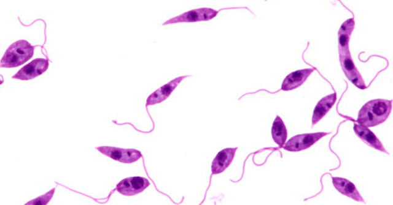
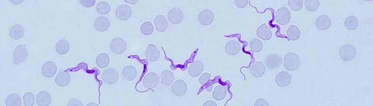
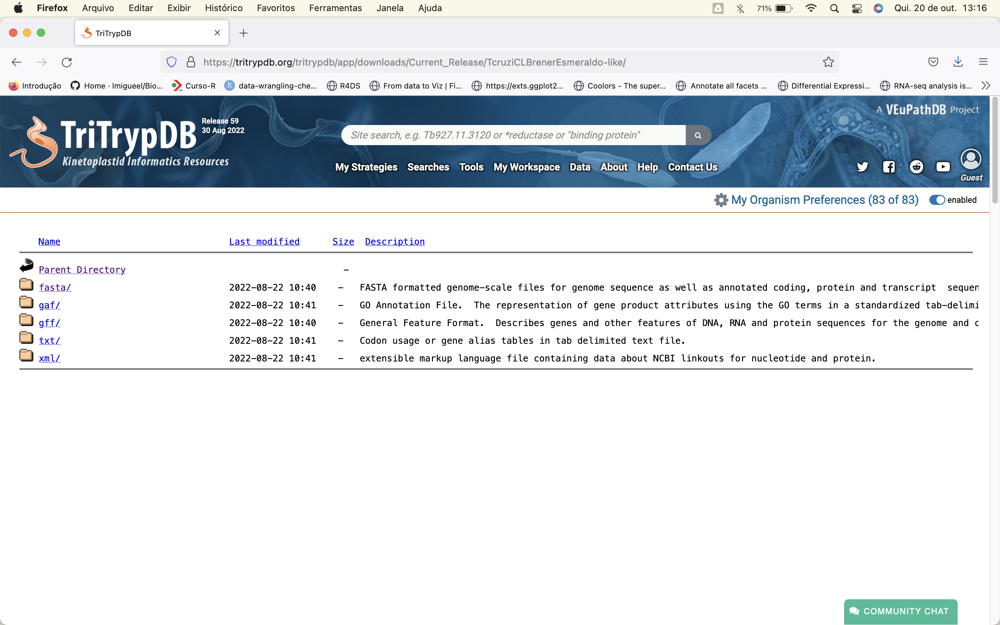
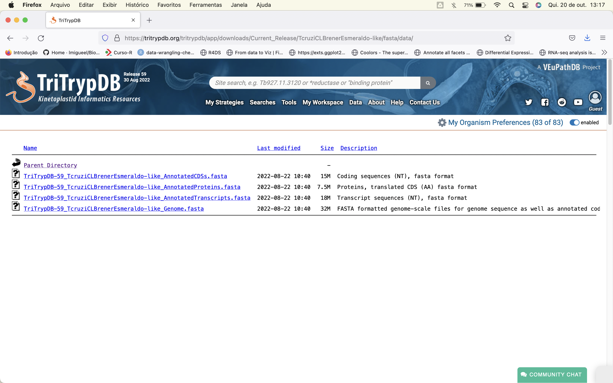
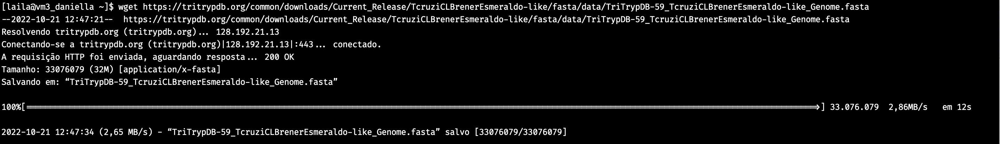

TriTrypDT - Transformando uma base de dados biológica (TriTrypDB) em uma tabela
TriTrypDB
O TriTrypDB é um banco de dados biológico que disponibiliza para a comunidade científica dados genômicos e fenotípicos de várias espécies de tripanossomatídeos. Os tripanossomatídeos são protozoários que possuem flagelo único e são parasitos obrigatórios de plantas e animais. Dentre os parasitos interesse médico, temos nessa família dois gêneros: Leishmania e Trypanosoma.
Gênero Leishmania
O gênero Leishmania possui espécies que causam Leishmaniose Visceral e Leishmaniose Cutânea, que causa feridas na pele. A Leishmaniose Visceral (LV) é a forma mais grave, e quando não tratada, 90% dos casos podem ter como desfecho a morte, devido ao envolvimento sistêmico causado pela presença dos parasitos em órgãos como medula óssea, baço e fígado. A Leishmaniose Cutânea produz lesões de pele nodulares e indolores que aumentam, sofrem ulceração no centro e podem persistir por meses a anos. Em alguns casos, os parasitos podem afetar áreas de mucosa, gerando a Leishmaniose Mucocutânea que pode provocar mutilação do nariz e do palato.

Gênero Trypanosoma
Já o gênero Trypanosoma possui duas espécies que causam doença no homem, Trypanosoma cruzi sendo responsável pela Doença de Chagas nas Américas e Trypanosoma brucei na África, causando a Doença do Sono.

Trypanosoma cruzi
O Trypanosoma cruzi é o agente etiológico da Doença de Chagas, que afeta mais de 8 milhões de pessoas na América Latina e coloca em risco mais de 25 milhões. A doença é caracterizada por duas fases, a aguda e a crônica, sendo a aguda muito complicada de ser diagnosticada evoluindo assim para a fase crônica. Na fase crônica o paciente pode ficar sem nenhuma manifestação clínica ou pode evoluir para as formas cardíacas ou digestivas, onde há aumento anormal do esôfago e do cólon.
Trypanosoma brucei
Já o Trypanosoma brucei é o agente etiológico da Doença do Sono, também conhecida como Tripanossomíase Africana Humana. Essa doença ocorre na África Subsaariana (36 países) e é transmitida por uma mosca chamada tsé-tsé. Cerca de 55 milhões de pessoas estão em risco de adquirir essa doença, sendo 3 milhões em risco considerado alto. Essa infecção afeta o sistema nervoso central e causa distúrbios neurológicos graves, podendo levar a pessoa à morte.
Importância de se estudar esses parasitos
Esses parasitos são causadores de doenças negligênciadas, ou seja, afetam populações pobres principalmente em regiões da África e América Latina, levando à morte mais de 1 milhão de pessoas anualmente. Geralmente medidas preventivas são conhecidas mas não são disponíveis nas áreas mais pobres do mundo. Algumas dessas doenças chegam a possuir tratamento, mas em alguns casos podem ser tóxicos e ineficazes, como é o caso do tratamento para a doença de Chagas. Sendo assim, é importante que mais estudos sejam feitos a respeito da biologia desses parasitos para que sirvam de base para o surgirmento de novas opções de tratamento e também possibilitem o desenvolvimento de vacinas.
Acesso aos arquivos no TriTrypDB
O TriTrypDB é um repositório excelente para buscar dados sobre os tripanossomatídeos. Entretanto, caso a gente queira buscar os genomas, as CDS (coding sequences), transcritos e proteínas de cada espécie depositada pode ser um pouco trabalhoso. Vou detalhar a seguir o passo a passo de como é feito através do site:
- Passo 1: ao acessar o TriTrypDB chegamos nessa página como ilustrado na figura abaixo. O primeiro passo é clicar em Data.
- Passo 2: ao clicar em Data ele nos dá algumas opções, devemos clicar então em Download Data Files.
- Passo 3: ao clicar em Download Data Files ele abre uma página com vários links referentes à diferentes realeases que são feitos dos dados dos organismos presentes no banco de dados. O ideal é sempre começar a trabalhar com o mais atual, no caso Current_Release. Sendo assim, clicamos nele.
- Passo 4: ao clicar em Current_Release ele abre uma nova página com os links para cada organismo presente no banco de dados. Vamos supor que vamos trabalhar com Trypanosoma cruzi Esmeraldo-Like e assim buscamos ele e clicamos no link.

- Passo 5: após selecionar o organismo que você quer baixar os dados, aparece uma lista com links contendo diferentes formatos de arquivos. Em geral, os arquivos mais utilizados são do formato fasta. Sendo assim, clicamos no link fasta.

- Passo 6: ao clicar em fasta, nos abre uma página com a possibilidade apenas de voltar à página anterior ou clicar em data. Prosseguimos clicando em data.
- Passo 7: finalmente chegamos na página de interesse! Para ter acesso à esses arquivos devemos baixá-los no servidor linux usando (wget endereço_do_link) para que possamos realizar as análises.

Objetivo do Webscraping
O objetivo do trabalho foi facilitar o acesso à esses dados presentes no site. Isso foi feito compilando os arquivos mais atuais do formato fasta de todos os organismos presentes no banco de dados em uma tabela.
Metodologia utilizada
Para realizar o acesso à página foram usados dois pacotes do R, o httre o RSelenium e para a manipulação dos dados foram utilizados pacotes pertencentes ao tidyverse. O httr foi utilizado para baixar o html da página dos arquivos considerados Current_Release através de uma requisição GET. Com isso o html em mãos os links foram acessados com o pacote xml2 e manipulados com stringr. Ulitizando novamente o httr e o xml2, o release atual foi recuperado com a intenção de manter a tabela atualizada conforme novas informações sejam depositadas no site. Com a informação do release coletada, ela foi novamente manipulada com o pacote stringr. Feito isso, eu gerei os sufixos de todos os arquivos que eu queria resgatar e juntei em um único objeto, que através de um loop utilizando a função for me permitiu gerar uma lista contendo uma tabela para cada tipo de arquivo. Por fim, utilizando o pacote data.table transformei os elementos da lista em um dataframe. O código utilizado para gerar a tabela está localizado logo abaixo.
#pacotes ------------
library(dplyr)
library(purrr)
library(stringr)
library(httr)
library(xml2)
library(data.table)
library(tidyr)
library(readr)
#baixando a página ------------
u_tritrypdb <- "https://tritrypdb.org/common/downloads/Current_Release/"
r_tritrypdb <- httr::GET(u_tritrypdb, write_disk(path = "tritrypdb.html", overwrite = TRUE))
#manipulacao dos dados obtidos ---------
names <- r_tritrypdb |>
xml2::read_html() |>
xml2::xml_find_all("//pre//a") |>
xml2::xml_attr("href") |> str_remove_all(pattern = "/")
#buscando o release atual ----------
current_release <- "https://tritrypdb.org/common/downloads/Current_Release/TcruziCLBrenerEsmeraldo-like/fasta/data/"
r_current <- httr::GET(current_release)
version <- r_current |>
xml2::read_html() |>
xml2::xml_find_all("//a") |>
xml2::xml_attr("href") |>
stringr::str_extract("[^_]+_[^_]+") |>
stringr::str_remove("TcruziCLBrenerEsmeraldo-like")
current <- version[9]
#nomes necessários para gerar os links da tabela final -------
current_release <- "https://tritrypdb.org/common/downloads/Current_Release/"
CDS <- "_AnnotatedCDSs.fasta"
protein <- "_AnnotatedProteins.fasta"
transcripts <- "_AnnotatedTranscripts.fasta"
genome <- "_Genome.fasta "
links_temp <- paste0(current_release, names)
all <- c(CDS, protein, transcripts, genome)
#gerando a tabela final -----------
tables <- list()
for (i in all) {
link <- paste0(links_temp, "/fasta", "/data/", current, names, i) |>
as.data.frame()
colnames(link) <- "link"
char <- 1:10 |> as.character()
link_final <- link |> mutate(test = link, type = i, release = current) |>
separate(test, into = char, sep = "/") |> select("7", type, release, "3", link) |>
rename(species = "7", database = "3") |>
mutate(type = str_remove(string = type, pattern = "_"))
link_final <- link_final |> filter(!str_detect(species, "="),
(!str_detect(species, "commondownloads")),
(!str_detect(species, "Build_number")))
tables[[i]] <- link_final
}
data.table::rbindlist(tables) |> arrange(species) |> readr::write_csv("TriTrypDT.csv")Resultado obtido
Segue abaixo a tabela gerada. Ela contêm 5 colunas, sendo:
1- species: nome da espécie depositada
2- type: tipo do arquivo fasta gerado (pode ser CDS, proteína, transcrito ou genoma)
3- release: qual o número do lançamento/distruibuição dos dados
4- database: qual o banco de dados foi utilizado para extrair os arquivos
5- link: link de cada arquivo para ser baixado com wget e ser analisado
readr::read_csv("TriTrypDT.csv", show_col_types = FALSE) |>
reactable::reactable(defaultPageSize = 4, searchable = TRUE)
Abaixo, ilustro como foi feito o download de um arquivo através do link presente na tabela utilizando o comando:
wget link_que_deseja_baixar

É interessante ressaltar que para todos os organismos, nem sempre todos os arquivos estarão disponíveis, portanto, alguns podem dar erro na hora do download.
Automatização
Com o desenvolvimento da tabela, o próximo passo foi automatizar a atualização semanal dela com o objetivo de deixá-la sempre atualizada na versão mais atual dos dados. Isso foi feito via Github Actions, seguindo o seguinte passo a passo:
name: Scraping TriTrypDB using R
on:
workflow_dispatch:
schedule:
- cron: "0 12 * * MON"
jobs:
scrape:
runs-on: ubuntu-latest
steps:
- uses: actions/checkout@v3
- uses: r-lib/actions/setup-r@v2
- uses: r-lib/actions/setup-r-dependencies@v2
with:
packages: |
any::httr
any::dplyr
any::stringr
any::purrr
any::xml2
any::data.table
any::tidyr
any::readr
- name: Gerar tabela
run: |-
Rscript "TriTrypDT.R"
- name: Commit e Push
run: |-
git config user.name "github-actions"
git config user.email "github-actions@github.com"
git add -A
timestamp=$(date -u)
git commit -m "Atualizado (pelo R) em: ${timestamp}" || exit 0
git pushConclusão
Essa tabela gerada será bastante útil para o meu dia-a-dia e também para os meus colegas de laboratório, fazendo com que o acesso à essas informações, que são buscadas com uma frequência relativamente alta, seja facilitada.